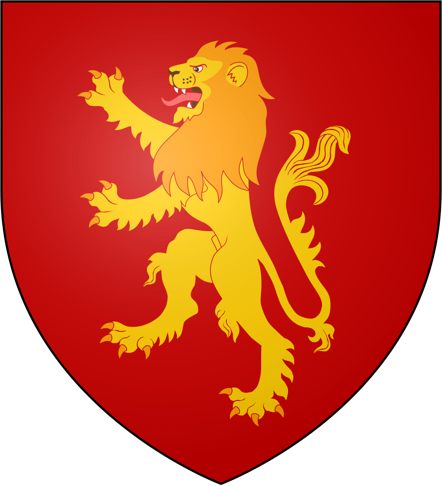

نام :
تیریون لنیستر (Tryon Lannister)
تیریون لنیستر (Tryon Lannister)
پدر :
تایوین لنیستر (Tywin Lannister)
تایوین لنیستر (Tywin Lannister)
خاندان :
لنیستر (Lannister)
لورم ایپسوم متن ساختگی با تولید سادگی نامفهوم از صنعت چاپ، و با استفاده از طراحان گرافیک است، چاپگرها و متون
بلکه روزنامه و مجله در ستون و سطرآنچنان که لازم است، و برای شرایط فعلی تکنولوژی مورد نیاز، و کاربردهای متنوع
با
هدف بهبود ابزارهای کاربردی می باشد، کتابهای زیادی در شصت و سه درصد گذشته حال و آینده، شناخت فراوان جامعه و
متخصصان را می طلبد، تا با نرم افزارها شناخت بیشتری را برای طراحان رایانه ای علی الخصوص طراحان خلاقی، و فرهنگ
پیشرو در زبان فارسی ایجاد کرد، در این صورت می توان امید داشت که تمام و دشواری موجود در ارائه راهکارها، و
شرایط
سخت تایپ به پایان رسد و زمان مورد نیاز شامل حروفچینی دستاوردهای اصلی، و جوابگوی سوالات پیوسته اهل دنیای
موجود
طراحی اساسا مورد استفاده قرار گیرد.لورم ایپسوم متن ساختگی با تولید سادگی نامفهوم از صنعت چاپ، و با استفاده
از
طراحان گرافیک است، چاپگرها و متون بلکه روزنامه و مجله در ستون و سطرآنچنان که لازم است، و برای شرایط فعلی
تکنولوژی مورد نیاز، و کاربردهای متنوع با هدف بهبود ابزارهای کاربردی می باشد، کتابهای زیادی در شصت و سه درصد
گذشته حال و آینده، شناخت فراوان جامعه و متخصصان را می طلبد، تا با نرم افزارها شناخت بیشتری را برای طراحان
رایانه
ای علی الخصوص طراحان خلاقی، و فرهنگ پیشرو در زبان فارسی ایجاد کرد، در این صورت می توان امید داشت که تمام و
دشواری موجود در ارائه راهکارها، و شرایط سخت تایپ به پایان رسد و زمان مورد نیاز شامل حروفچینی دستاوردهای
اصلی، و
جوابگوی سوالات پیوسته اهل دنیای موجود طراحی اساسا مورد استفاده قرار گیرد.لورم ایپسوم متن ساختگی با تولید
سادگی
نامفهوم از صنعت چاپ، و با استفاده از طراحان گرافیک است، چاپگرها و متون بلکه روزنامه و مجله در ستون و
سطرآنچنان
که لازم است، و برای شرایط فعلی تکنولوژی مورد نیاز، و کاربردهای متنوع با هدف بهبود ابزارهای کاربردی می باشد،
کتابهای زیادی در شصت و سه درصد گذشته حال و آینده، شناخت فراوان جامعه و متخصصان را می طلبد، تا با نرم افزارها
شناخت بیشتری را برای طراحان رایانه ای علی الخصوص طراحان خلاقی،